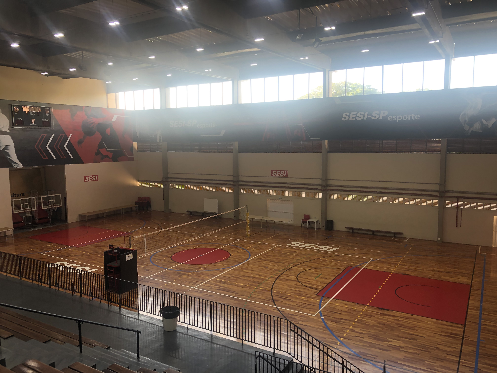
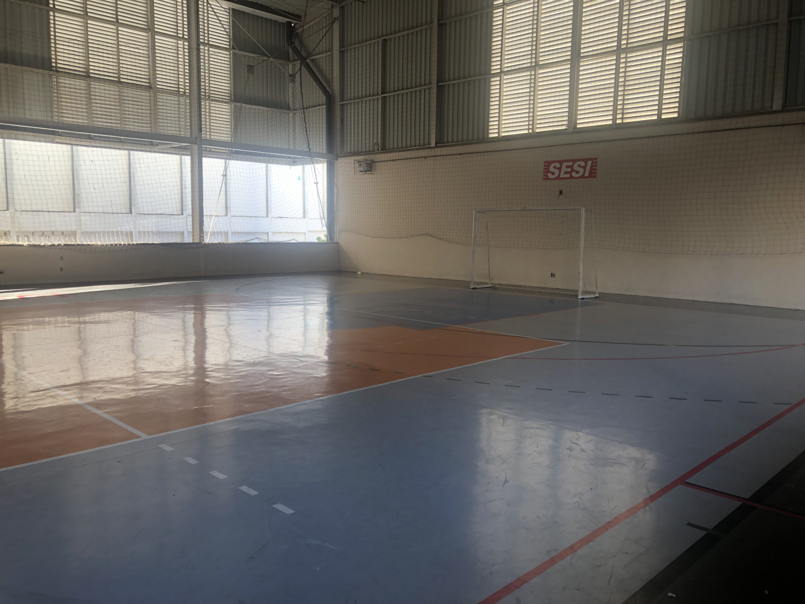
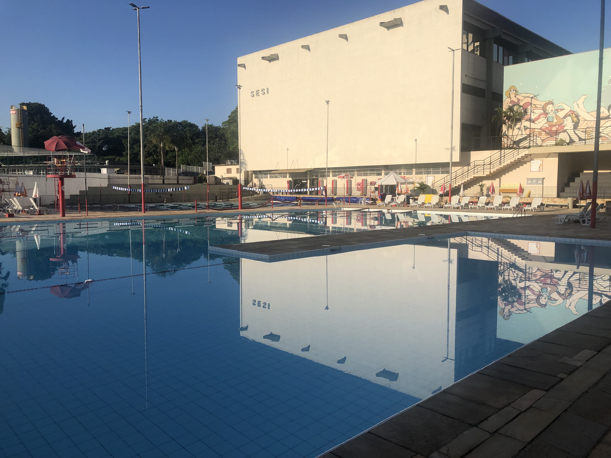
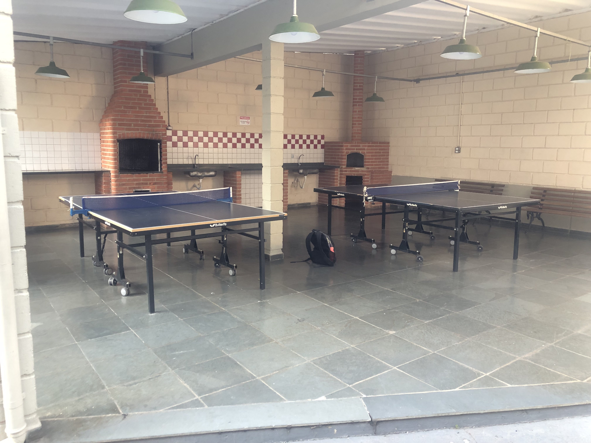
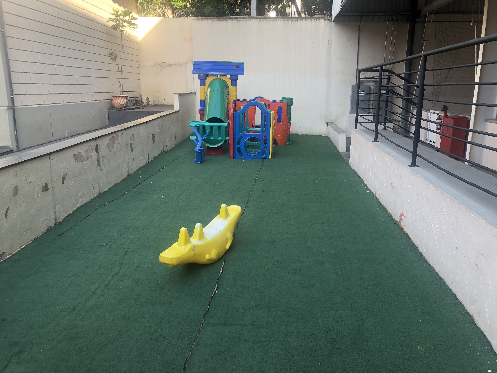
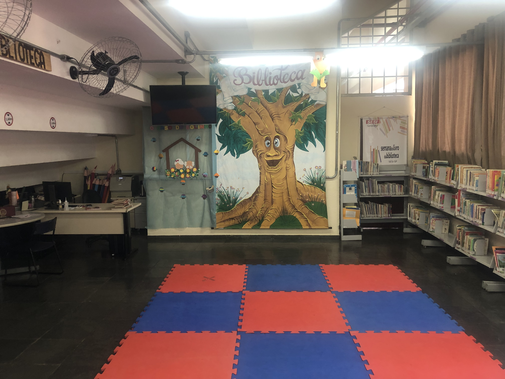
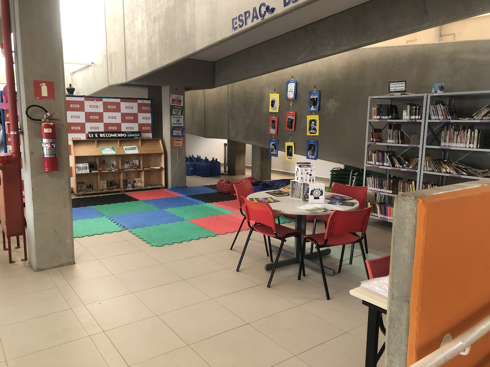

O Centro de Atividades Senador José Ermírio de Moraes | SESI Sorocaba iniciou suas atividades em 1969, através de convênio firmado com a Prefeitura Municipal. A unidade oferece soluções para as empresas industriais brasileiras por meio de uma rede integrada, que engloba atividades de educação, segurança e saúde do trabalho, cultura e qualidade de vida.
Você tem à sua disposição as piscinas, quadras e áreas livres. Essa opção é para quem quer aproveitar o nosso Centro de Atividades - CAT - para ter uma vida mais ativa, saudável e muito mais feliz.
Esportes - SESI
O esporte e a qualidade de vida são fundamentais para que os trabalhadores da indústria e seus familiares, como também crianças, adolescentes, jovens e adultos da comunidade possam se desenvolver para a cidadania.
Milhares de pessoas vem sendo beneficiadas com iniciativas de incentivo ao condicionamento físico e de práticas saudáveis, incluindo modalidades olímpicas e de pouca difusão no Brasil, oferecidas pela unidade do SESI-SP, priorizando o atendimento aos industriários e seus familiares e aos alunos da educação básica da instituição.
Quadras


Programa Atleta do Futuro
O programa Atleta do Futuro, com mais de 25 anos de história, promove formação e cultura esportiva. Tudo oferecido gratuitamente para crianças e jovens de 6 a 17 anos. A proposta é contribuir para a garantia do direito de acesso ao esporte de qualidade a partir da metodologia elaborada pelo SESI-SP, que alinha o esporte ao desenvolvimento integral dos participantes. Ao promover formação esportiva, o SESI-SP permite que os alunos e alunas aprendam diferentes modalidades esportivas, com conteúdo e estratégias adequadas para cada faixa etária. Ao difundir a cultura esportiva, a instituição permite que o aluno desenvolva uma relação na qual o esporte faça parte de sua vida, seja como praticante, espectador ou profissional.
Áreas de Lazer
O CAT Sesi conta com vários espaços de lazer, tais como:
Piscina:

Quiosque:

Brinquedos:

Cantina:

Bibliotecas:

